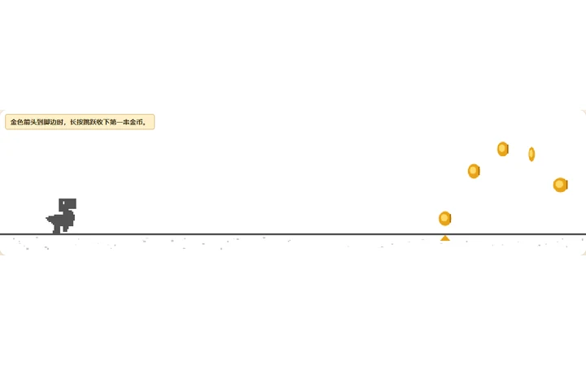
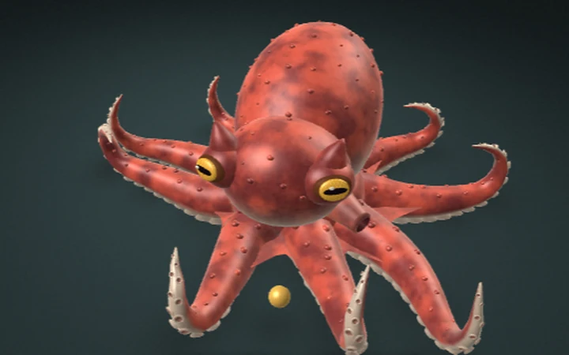
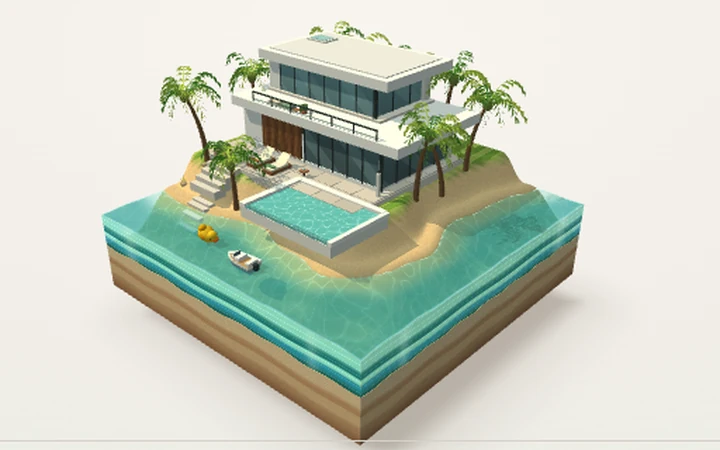
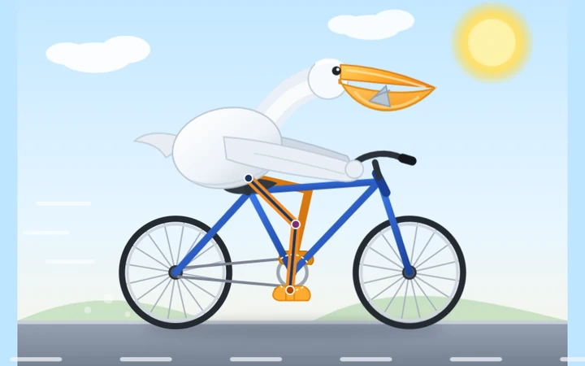
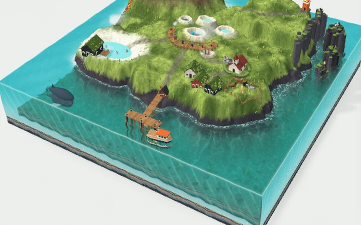

精选作品
五件可以动手玩的作品。
-

-

-

关于我与学习
把喜欢的东西做成作品，是我学习的动力。
我喜欢二次元、动漫、游戏、设计和数码。最近在把前端基础和这些兴趣接起来，从一页动画到一条能反复玩的跑道。
正在学和用的东西
- HTML / CSS / JavaScript
- Git / GitHub
- 数据结构与算法
- AI 辅助编程
也在用 VS Code 和 AI 助手做原型，练习把需求讲清楚、自己试玩和找问题。
求学经历
- 天津大学香港理工大学深圳未来技术学院
计算机科学与技术 · 2026 级大一
- 2020–2026广州大学附属中学
- 2014–2020广州市海珠区大江苑小学
预设话题
- 认识我
- 作品与分工
- AI 与学习
- 回答的边界
创作笔记
记录两次试玩后做的调整。
观鲸船为什么需要惯性间歇泉果冻
第一版试玩时，我发现船停在海面上，鲸鱼跳完就消失了。我提出让它们持续航行和游动，也让拖拽能改变方向和速度。
我想要的手感很具体。把船朝开阔海面甩一下，松手后它应该滑一段，再转回航线。AI 协助做了操控和回航逻辑，短片里能看见这两个动作。

DINO 为什么要加不能全拿的金币路线恐龙快跑
我想让玩家跑过同一段路时有两种打法。留在地面能稳拿三枚，起跳去拿五枚就要把握时机。两条路提前摆出来，拾到第一枚时就选定这一段的走法。
试玩时我也指出，有些金币弧不完整，轮廓不好读。AI 协助把弧线统一成镜像形状，做了选择和计分。固定赛道让我能用同一段路比较不同跑法。
创作分工与模型署名
我负责提出想法、设计、试玩和判断，AI 协助实现与调整。
- 鹈鹕骑自行车 · DeepSeek-V4-Flash-Vision-Exp
- 恐龙快跑 · dth/DeepSeek-V4.1-Flash
- 双层果冻章鱼、果冻别墅、间歇泉果冻 · GPT-6.2 Sol